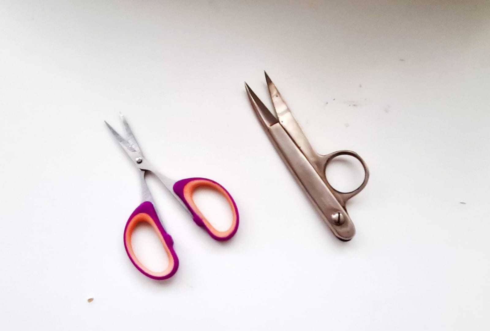
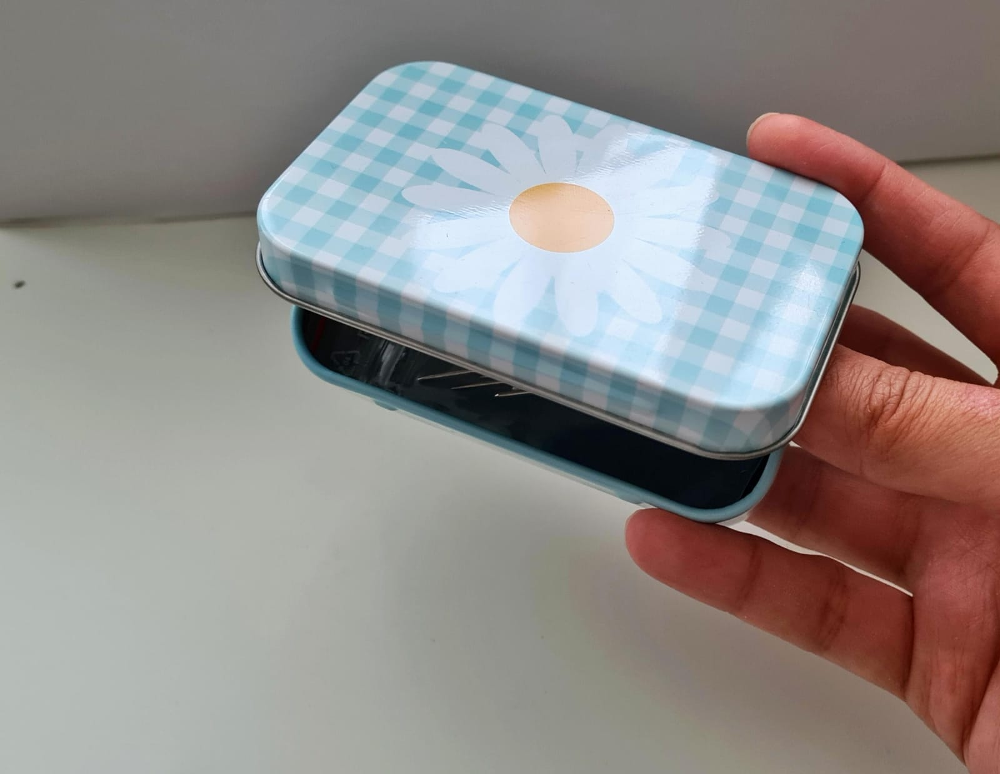
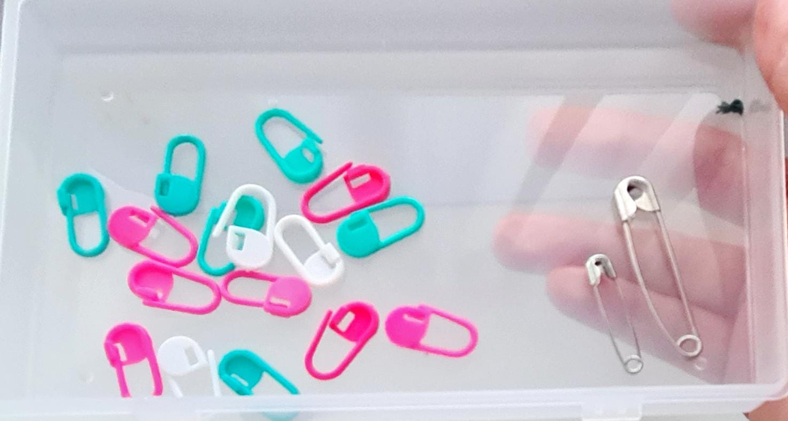
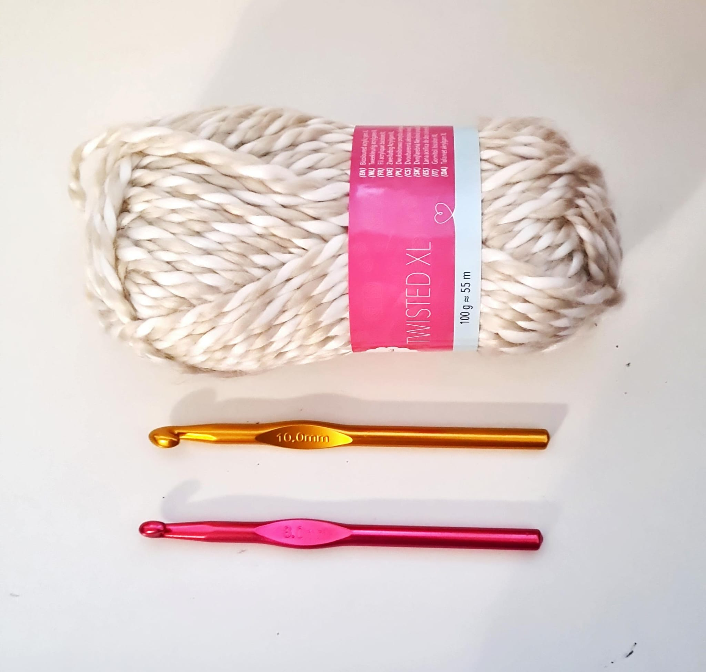

-
Schaar
Ontdek de diversiteit aan hoogwaardige scharen en experimenteer om te vinden wat het beste bij jou past. Mijn persoonlijke ervaring beveelt gereedschap met scherpe, dunne messen aan, waardoor je smalle plekken kunt bereiken zonder het algehele werk te beïnvloeden.
 -
Box
Het is bevredigend om specifieke items snel te vinden. Ik raad aan kleine dozen te gebruiken om alle details van het huidige project netjes op te bergen. Op die manier weet je altijd waar je naald, schaar of andere benodigdheden zijn, en hoef je niet eindeloos te zoeken wanneer je ze nodig hebt.
 -

Markers
Het belang van het gebruik van een "markeer" tijdens het haken. De markers worden gebruikt om een specifieke steek in een rij te markeren, #waardoor het gemakkelijker wordt om later aan het werk te gaan na een pauze. Daarnaast wordt de markers gebruikt in de laatste steek van elke rij om het aantal gewerkte rijen te tellen. Ik heb zelf voorkeur aan plastic markers vanwege hun levendige kleuren, die het gebruik ervan nog aantrekkelijker maken.
-

Wol en haaknaald
In de beginfase van het leren haken, is het aan te raden om garen met een goede dikte te gebruiken, bij voorkeur een zeer dikke wol. Hierdoor kun je het pad van de garen duidelijk zien en gemakkelijker bepalen waar de juiste steek geplaatst moet worden. Dit is in tegenstelling tot dunner garen, wat meer inspanning en vaardigheid vereist. Kortom, maak gebruik van dikker garen.
-

Wol kiezen
De kwaliteit van wol kan worden beoordeeld door naar de achterkant van de hoes van het garenbolletje te kijken. Deze achterkant bevat belangrijke informatie over de samenstelling van de wol, was instructies, aanbevolen haaknaaldmaat en de lengte van het garen. Deze details zijn essentieel bij het bepalen van de geschiktheid van de wol voor specifieke haakprojecten, zoals het maken van kledingstukken zoals jasjes of mutsen.
-
Verwijderen de inkt
Leer hier hoe je thermische inkt veilig verwijdert. Gebruik het met zorg en kies tussen twee opties: een strijkijzer of een föhn. Houd de stof niet te dicht bij de warmte om verbranding of beschadiging te voorkomen.
-
Steek
De gezwollen steek, een elegante borduurtechniek, komt van pas wanneer het nodig is om een specifieke locatie of punt in het werk te accentueren. Het versnelt het borduurproces met duidelijke accenten en is eenvoudig te beheersen. Raadpleeg de video voor gedetailleerde instructies.
-
Twee kolommen steek
In deze video ontdek je een moeiteloze manier om de twee kolommen met elkaar te verbinden. Ik hoop dat je er waarde uit haalt. Probeer het uit en deel je creatieve resultaten met mij. Deze video demonstreert een eenvoudige en gemakkelijke methode om de twee kolommen aan elkaar te naaien. Ik hoop dat je er profijt van hebt. Pas het toe en deel je creativiteit met mij.